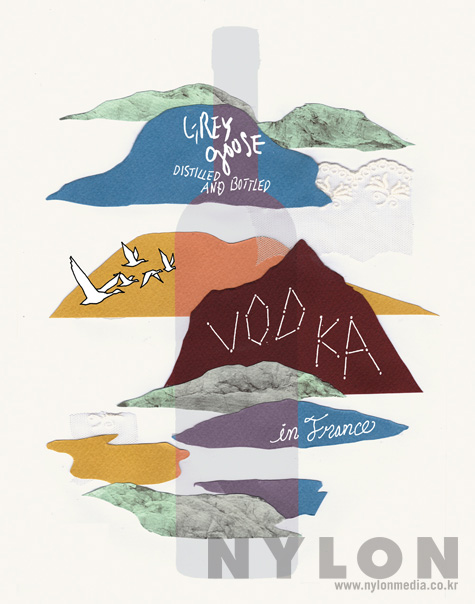

크리스탈 헤드

크리스탈 헤드 보드카는 다소 거친 느낌의 해골 모양 패키지에 비해 부드럽고 순수한 맛과 향을 지녔더라고요. 이를 사막에 핀 꽃에 비유하고 싶었어요. 그만큼 아름답고 신비하면서도 유니크한 크리스탈 헤드의 매력을 이 그림을 통해 보다 많은 사람이 알아줬으면 해요.
핀란디아

크리스탈 헤드 보드카는 다소 거친 느낌의 해골 모양 패키지에 비해 부드럽고 순수한 맛과 향을 지녔더라고요. 이를 사막에 핀 꽃에 비유하고 싶었어요. 그만큼 아름답고 신비하면서도 유니크한 크리스탈 헤드의 매력을 이 그림을 통해 보다 많은 사람이 알아줬으면 해요.
그레이 구스
크리스탈 헤드 보드카는 다소 거친 느낌의 해골 모양 패키지에 비해 부드럽고 순수한 맛과 향을 지녔더라고요. 이를 사막에 핀 꽃에 비유하고 싶었어요. 그만큼 아름답고 신비하면서도 유니크한 크리스탈 헤드의 매력을 이 그림을 통해 보다 많은 사람이 알아줬으면 해요.
제임슨위스키

크리스탈 헤드 보드카는 다소 거친 느낌의 해골 모양 패키지에 비해 부드럽고 순수한 맛과 향을 지녔더라고요. 이를 사막에 핀 꽃에 비유하고 싶었어요. 그만큼 아름답고 신비하면서도 유니크한 크리스탈 헤드의 매력을 이 그림을 통해 보다 많은 사람이 알아줬으면 해요.